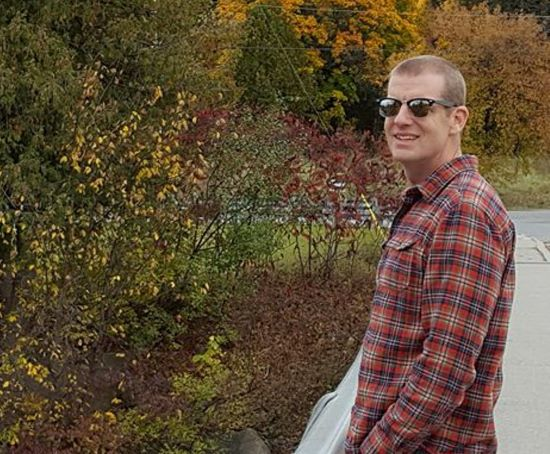

About Me
Student in IMD in Ottawa, Canada. I am a veteran who started retraining after my 15th year in the Canadian Armed Forces. I like to say that I am a personal wellness enthusiast, a spiritual pilgrim, and an advocate for healthy leadership. My hope is to partner my experience and background with what I learn in this program to provide solutions for Colleges and Non-profits seeking to leverage the digital economy
I am married with four children ranging in ages from six to thirteen. My wife is a visual and recording artist who has also trained at Algonquin College. We are hoping to work together on projects with our newfound freedom now that I have retired from working for the government.
Live deliberately -Jon Kabat-Zinn